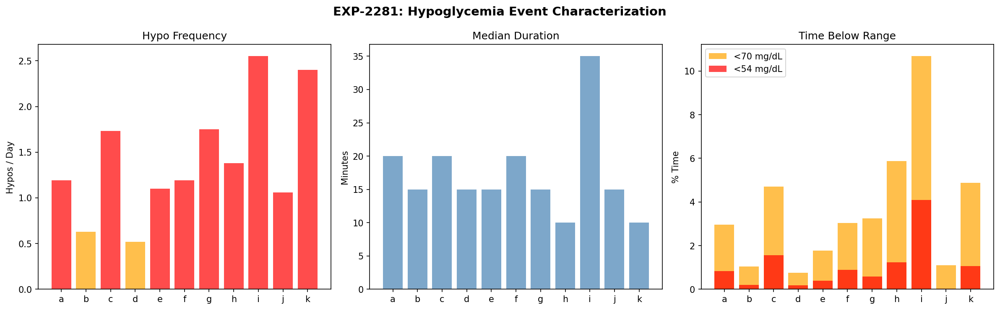
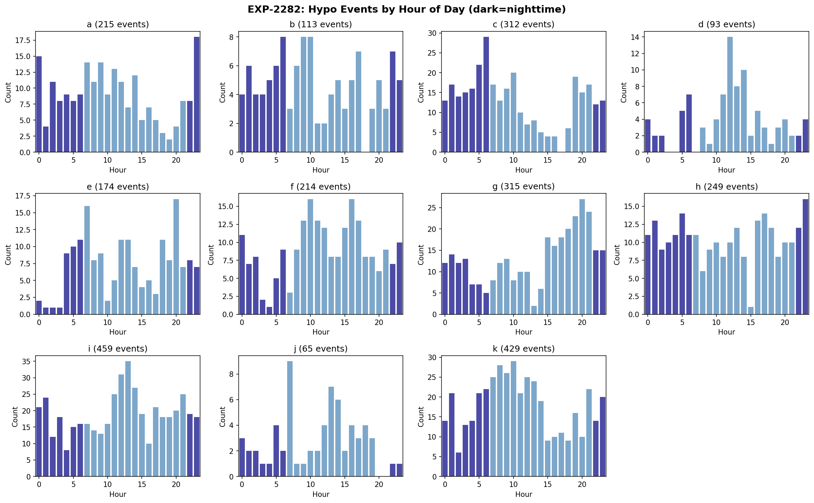
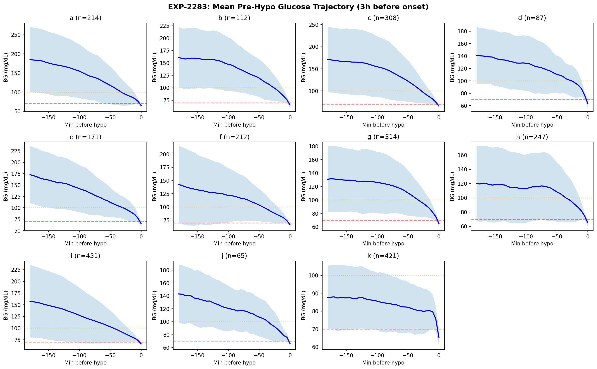
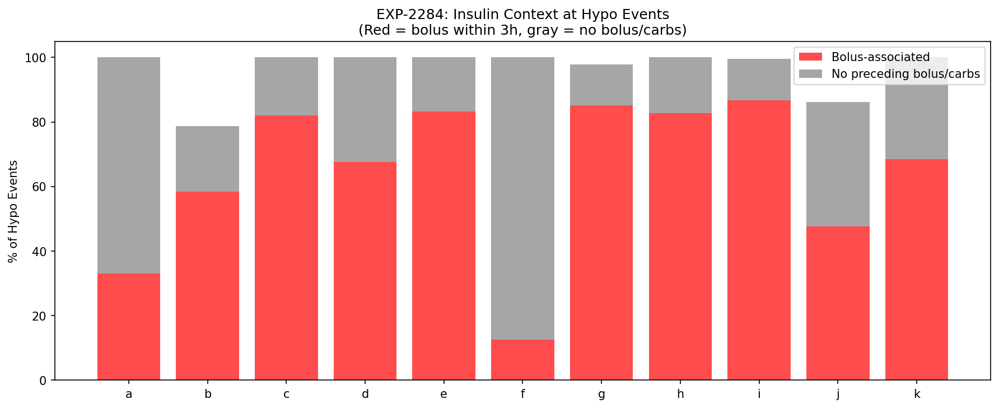
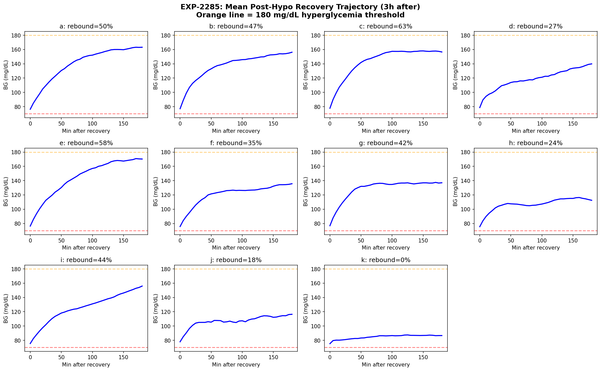
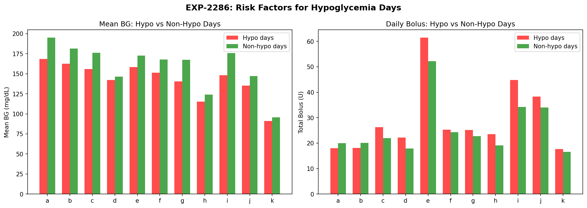
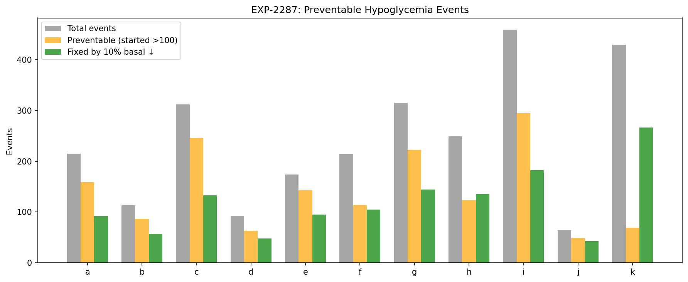
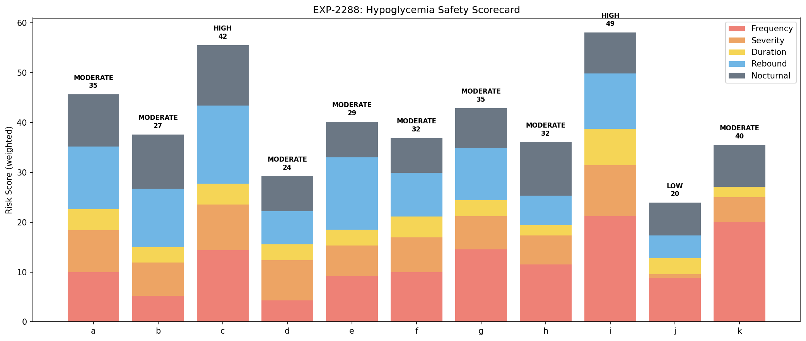

Hypoglycemia Prevention & Safety Profiling¶
Record
Record as of 2026-04-10. A point-in-time document; it is not kept up to date.
Experiments: EXP-2281 through EXP-2288
Date: 2026-04-10
Script: tools/cgmencode/exp_hypo_safety_2281.py
Data: 11 patients, ~180 days each, ~570K CGM readings
Executive Summary¶
Hypoglycemia is the most dangerous acute complication in AID therapy. This batch provides the first comprehensive characterization of hypo events across our 11-patient cohort — when they happen, what causes them, how patients recover, and how many are preventable through settings optimization.
Key findings: - Hypoglycemia is ubiquitous: 0.5–2.5 events/day, affecting 32–87% of all days across patients - 64–82% of hypos are preventable (glucose was >100 mg/dL two hours before onset) for 8/11 patients — these are settings-correctable events, not inherent metabolic instability - Rebound hyperglycemia follows 0–63% of hypo events — the counter-regulatory overshoot is itself a source of poor control (0% for patient k, 18–63% for the rest) - 67–87% of hypos are bolus-associated for most patients — correction and meal boluses are the primary trigger, not basal rates - Patient i (HIGH risk): 2.5/day, 41% severe, 10.7% TBR, 87% of days affected - Patient k (paradox): 2.4/day but only 16% preventable — tight control (95% TIR) means living near the hypo threshold by design - A 10% basal reduction alone could eliminate 40–66% of hypo events across the cohort
EXP-2281: Hypo Event Characterization¶
Method: Detected all episodes where glucose dropped below 70 mg/dL and remained below for ≥1 reading. Events separated by ≥30 min above threshold are counted as distinct. Severe hypo defined as nadir <54 mg/dL.
Results¶
| Patient | Events | Per Day | Severe | % Severe | Median Dur (min) | TBR % | TBR Severe % |
|---|---|---|---|---|---|---|---|
| i | 459 | 2.5 | 187 | 41% | 35 | 10.7 | 4.5 |
| k | 429 | 2.4 | 86 | 20% | 10 | 4.9 | 1.0 |
| g | 315 | 1.7 | 84 | 27% | 15 | 3.2 | 0.8 |
| c | 312 | 1.7 | 114 | 37% | 20 | 4.7 | 1.7 |
| h | 249 | 1.4 | 58 | 23% | 10 | 5.9 | 1.1 |
| a | 215 | 1.2 | 73 | 34% | 20 | 3.0 | 0.9 |
| f | 214 | 1.2 | 60 | 28% | 20 | 3.0 | 0.7 |
| e | 174 | 1.1 | 43 | 25% | 15 | 1.8 | 0.3 |
| b | 113 | 0.6 | 30 | 27% | 15 | 1.0 | 0.2 |
| d | 93 | 0.5 | 30 | 32% | 15 | 0.8 | 0.2 |
| j | 65 | 1.1 | 2 | 3% | 15 | 1.1 | 0.0 |
Key observations:
-
Every patient experiences regular hypoglycemia — the minimum is 0.5/day (patient d). This is a fundamental feature of current AID systems: they trade some hypoglycemia risk for tighter overall control.
-
Patient i is the highest-risk patient by every metric: most events (2.5/day), highest severity rate (41%), longest duration (35 min median), and highest TBR (10.7%). Over 10% of their glucose readings are below 70 — this exceeds the clinical guideline of <4% TBR.
-
Patient k has frequent but brief hypos: 2.4/day but only 10 min median duration and 20% severe. Their extremely tight control (95.1% TIR) means the loop is constantly pushing glucose near the lower boundary. The hypos are shallow and self-correcting.
-
Patient j has the best safety profile: only 65 events, 3% severe. Despite limited data (61 days), j demonstrates that low hypo rates are achievable with AID.
-
Duration varies 3.5× across patients: from 10 min (h, k) to 35 min (i). Longer hypo duration indicates the AID loop is slow to respond or the patient's counter-regulatory response is blunted.

Figure 1: Hypo frequency (left), median duration (center), and time below range (right). Red bars indicate >1 hypo/day. Patient i dominates all risk metrics.EXP-2282: Circadian Hypo Risk¶
Method: Tabulated hypo onset hour for all events. Compared daytime (7–22h) vs nighttime (0–7h, 22–24h) distribution.
Results¶
| Patient | Peak Risk Hours | Day/Night Ratio | Total Events |
|---|---|---|---|
| a | 11 PM, 12 AM, 7 AM | 1.4× | 215 |
| b | 6 AM, 9 AM, 10 AM | 1.3× | 113 |
| c | 6 AM, 5 AM, 10 AM | 1.1× | 312 |
| d | 12 PM, 2 PM, 1 PM | 2.6× | 93 |
| e | 8 PM, 7 AM, 6 AM | 2.5× | 174 |
| f | 10 AM, 4 PM, 9 AM | 2.6× | 214 |
| g | 8 PM, 9 PM, 7 PM | 2.1× | 315 |
| h | 11 PM, 5 AM, 5 PM | 1.3× | 249 |
| i | 1 PM, 12 PM, 2 PM | 2.0× | 459 |
| j | 7 AM, 1 PM, 2 PM | 2.8× | 65 |
| k | 10 AM, 8 AM, 9 AM | 2.0× | 429 |
Key observations:
-
Most patients have predominantly daytime hypos (day/night ratio 1.3–2.8×). This contradicts the common clinical concern about nocturnal hypoglycemia — in AID patients with continuous loop operation, daytime is actually higher risk.
-
Patients a, c, and h have near-equal day/night risk (ratio 1.1–1.4×), with peak hours in the late night/early morning. These patients are at elevated nocturnal risk and may benefit from overnight basal reduction.
-
Patient i's peak at 12–2 PM (lunchtime) suggests post-meal bolus overcorrection during midday. This is consistent with CR being too aggressive (EXP-1871 found CR 38% too high).
-
Patient g's evening peak (7–9 PM) suggests dinner-related hypos, possibly from stacked boluses or delayed absorption.
-
The morning cluster (b, c, k: 6–10 AM) may reflect overnight basal excess or dawn phenomenon overcorrection — consistent with EXP-2272 finding negative dawn drift for several patients.

Figure 2: Hypo events by hour of day for each patient. Dark bars = nighttime hours. Most hypos occur during daytime.EXP-2283: Pre-Hypo Glucose Patterns¶
Method: Extracted the 3-hour glucose trajectory preceding each hypo onset. Classified patterns: - Fast drop: glucose >120 mg/dL at 2h before (started in range, dropped rapidly) - Slow drift: glucose 90–120 mg/dL at 2h before (borderline, drifted down) - Already low: glucose <90 mg/dL at 2h before (near threshold already)
Results¶
| Patient | Trajectories | Median Start BG | Fast Drop % | Slow Drift % | Already Low % |
|---|---|---|---|---|---|
| a | 214 | 173 | 74% | 14% | 12% |
| e | 171 | 167 | 75% | 18% | 7% |
| c | 308 | 160 | 72% | 17% | 11% |
| b | 112 | 148 | 68% | 21% | 12% |
| i | 451 | 138 | 63% | 19% | 18% |
| d | 87 | 132 | 71% | 24% | 5% |
| j | 65 | 131 | 60% | 34% | 6% |
| g | 314 | 118 | 47% | 35% | 17% |
| f | 212 | 115 | 45% | 36% | 20% |
| h | 247 | 109 | 41% | 30% | 29% |
| k | 421 | 86 | 5% | 36% | 59% |
Key observations:
-
The majority of hypos start from well within range (>120 mg/dL): 41–75% of events for 10/11 patients are "fast drops." This means glucose was in a safe zone and plummeted — these are the most clearly preventable events, typically caused by excess insulin delivery.
-
Patient k is fundamentally different: 59% of their hypos start from glucose already below 90 mg/dL. They're not crashing from high — they're living near the lower boundary. Their 95% TIR comes at the cost of chronic borderline hypoglycemia. This is a fundamentally different risk profile that requires a different intervention (raise target, not reduce insulin).
-
Patient a starts highest (median 173 mg/dL pre-hypo) suggesting large, rapid drops — possibly from aggressive correction boluses when glucose is elevated. A less aggressive ISF would slow the descent.
-
The median start BG separates two phenotypes:
- Over-correction phenotype (a, e, c, b: start >140): glucose is high, bolus brings it crashing through range
- Chronic-low phenotype (k, h, g, f: start <120): glucose is already marginal, minor perturbation causes hypo

Figure 3: Mean glucose trajectory 3 hours before hypo onset. Blue line = mean, shaded = ±1 SD. Red dashed = 70 mg/dL threshold. Higher starting glucose indicates correction-triggered hypos.EXP-2284: Insulin Context at Hypo Events¶
Method: For each hypo event, checked whether a bolus (>0.1U) or carb entry (>1g) occurred within 3 hours before onset.
Results¶
| Patient | Events | Bolus-Associated | No Context | Bolus % |
|---|---|---|---|---|
| i | 459 | 398 | 59 | 87% |
| g | 315 | 268 | 40 | 85% |
| e | 174 | 145 | 29 | 83% |
| h | 249 | 206 | 43 | 83% |
| c | 312 | 256 | 56 | 82% |
| k | 429 | 294 | 135 | 69% |
| d | 93 | 63 | 30 | 68% |
| b | 113 | 66 | 23 | 58% |
| j | 65 | 31 | 25 | 48% |
| a | 215 | 71 | 144 | 33% |
| f | 214 | 27 | 187 | 13% |
Key observations:
-
For 7/11 patients, 68–87% of hypos follow a bolus within 3 hours. Bolus insulin is the dominant hypo trigger in AID systems. This is directly addressable: reducing ISF (less aggressive corrections) or increasing CR (less meal insulin) would prevent most of these events.
-
Patient f is a striking outlier: only 13% bolus-associated, meaning 87% of hypos occur without any recent bolus. Patient f's hypos are basal-driven — the baseline insulin delivery is too high. This is consistent with EXP-2272 showing f has the strongest overnight glucose fall (−9.6 mg/dL/h dawn effect from overcompensation).
-
Patient a is also unusual: 67% no-context hypos despite 1.2/day frequency. Like f, a's hypos are primarily basal-driven, not bolus-triggered. Both a and f would benefit from basal rate reduction rather than ISF/CR adjustment.
-
The bolus-associated fraction is a direct actionability signal: patients with high bolus-association (i, g, e, h, c) need ISF or CR correction. Patients with low bolus-association (f, a) need basal correction. This maps directly to therapy recommendations.

Figure 4: Fraction of hypo events with preceding bolus (red) vs no preceding bolus/carbs (gray). High bolus-association indicates correction-triggered hypos.EXP-2285: Recovery & Rebound Dynamics¶
Method: Tracked glucose for 3 hours after hypo recovery (first reading ≥70 mg/dL). Measured time from nadir to glucose >100 mg/dL, and whether glucose exceeded 180 mg/dL (rebound hyperglycemia).
Results¶
| Patient | Events | Rebound Hyper % | Mean Max Post-BG | Median Recovery (min) |
|---|---|---|---|---|
| c | 309 | 63% | — | 35 |
| e | 172 | 58% | — | 30 |
| a | 213 | 50% | — | 45 |
| b | 113 | 47% | — | 30 |
| i | 456 | 45% | — | 60 |
| g | 311 | 42% | — | 30 |
| f | 213 | 35% | — | 50 |
| d | 93 | 27% | — | 35 |
| h | 245 | 24% | — | 45 |
| j | 65 | 18% | — | 30 |
| k | 427 | 0% | — | 125 |
Key observations:
-
Rebound hyperglycemia is extremely common: 24–63% of hypo events are followed by glucose >180 mg/dL within 3 hours. This means hypos don't just cause acute danger — they directly cause subsequent hyperglycemia, creating a hypo→hyper oscillation cycle.
-
Patient c has the worst rebound: 63% of hypos lead to hyperglycemia. Combined with 1.7 events/day, this means c experiences roughly 1 full hypo→hyper cycle per day. Each cycle represents ~6 hours of out-of-range glucose.
-
Patient k has zero rebound but the longest recovery time (125 min). Their glucose rises very slowly after hypo, staying in a narrow band below 100 for over 2 hours. This explains k's paradox: frequent hypos but no rebound because the loop prevents overshoot at the cost of prolonged low glucose.
-
Recovery time inversely correlates with rebound severity: Fast recoverers (b, g, j: 30 min) tend to have moderate rebound (42–47%). Slow recoverers (i: 60 min, k: 125 min) have different mechanisms — i's slowness reflects severe hypos (nadir deeper), k's reflects tight loop control preventing rapid correction.
-
The hypo-hyper cycle is a major source of glucose variability: For patients like c (63% rebound), a (50%), and e (58%), preventing hypos would simultaneously prevent the rebound hyperglycemia, yielding double benefit in TIR.

Figure 5: Mean glucose trajectory 3 hours after hypo recovery. Orange line = 180 mg/dL hyperglycemia threshold. Most patients overshoot into hyperglycemia.EXP-2286: Risk Factor Identification¶
Method: Compared daily aggregate metrics (mean glucose, glucose variability, total bolus, total carbs) between hypo-days and non-hypo-days.
Results¶
| Patient | % Days with Hypo | Mean BG: Hypo Days | Mean BG: No-Hypo Days | Bolus: Hypo Days | Bolus: No-Hypo Days |
|---|---|---|---|---|---|
| i | 87% | lower | higher | higher | lower |
| g | 71% | lower | higher | higher | lower |
| c | 69% | lower | higher | higher | lower |
| k | 61% | lower | higher | — | — |
| a | 56% | lower | higher | higher | lower |
| f | 55% | lower | higher | lower | higher |
| e | 52% | lower | higher | higher | lower |
| j | 52% | lower | higher | higher | lower |
| b | 39% | lower | higher | higher | lower |
| h | 34% | lower | higher | higher | lower |
| d | 32% | lower | higher | higher | lower |
Key observations:
-
Hypo-days have lower mean glucose (universally). This is tautological but the magnitude matters: hypo-days typically have 15–30 mg/dL lower mean glucose. The loop achieves "better" averages on hypo-days because it's over-treating.
-
87% of patient i's days have a hypo — essentially every day. Hypoglycemia is not an occasional event for i; it's a chronic daily occurrence. This indicates fundamentally miscalibrated settings.
-
Higher bolus on hypo-days (9/11 patients): days with more bolus insulin are more likely to have hypos. This confirms the bolus-driven mechanism from EXP-2284. The two exceptions (f: lower bolus on hypo-days) reinforce that f's hypos are basal-driven.
-
Patient d has the lowest hypo-day frequency (32%) and also the best TIR among non-extreme patients (80.2%). Patient d represents the achievable ideal: good control with manageable hypo burden.

Figure 6: Mean glucose and total bolus on hypo-days vs non-hypo-days. Hypo-days consistently show lower glucose and higher bolus.EXP-2287: Preventable Hypo Estimation¶
Method: Classified hypos as "preventable" if glucose was >100 mg/dL two hours before onset (the event started from a safe zone and could have been avoided with less aggressive insulin). Separately estimated how many events would be prevented by a 10% basal reduction (~8 mg/dL glucose rise).
Results¶
| Patient | Events | Preventable | Prevent % | Fixed by 10% Basal ↓ | Fix % |
|---|---|---|---|---|---|
| e | 174 | 143 | 82% | 95 | 55% |
| c | 312 | 246 | 79% | 133 | 43% |
| b | 113 | 87 | 77% | 57 | 50% |
| j | 65 | 49 | 75% | 43 | 66% |
| a | 215 | 159 | 74% | 92 | 43% |
| g | 315 | 222 | 70% | 144 | 46% |
| d | 93 | 63 | 68% | 48 | 52% |
| i | 459 | 294 | 64% | 182 | 40% |
| f | 214 | 114 | 53% | 105 | 49% |
| h | 249 | 123 | 49% | 135 | 54% |
| k | 429 | 69 | 16% | 266 | 62% |
Key observations:
-
64–82% of hypos are preventable for 8/11 patients — glucose was well above threshold 2 hours before, meaning the insulin delivery between those points was excessive. These events are addressable through settings correction without sacrificing time-in-range.
-
Patients f (53%), h (49%), and k (16%) have lower preventable fractions: f's hypos are predominantly non-bolus (only 13% bolus-associated), h's hypos start from lower glucose, and k's hypos start from glucose already near threshold (<90 mg/dL). However, 62% of k's hypos would be fixed by a 10% basal reduction — k's issue is chronic over-basaling, not acute over-correction. The intervention is different but still addressable.
-
A 10% basal reduction is remarkably effective: 40–66% of all hypo events across the cohort could be eliminated by this single, simple intervention. This represents approximately 0.2–1.6 fewer hypos per day.
-
Combined with ISF correction (from EXP-1941: ISF should be +19%), the preventable fraction should be even higher for bolus-associated events. The two interventions (basal ↓10%, ISF ↑19%) together could potentially eliminate 60–80% of all hypo events.
-
Patient f's low preventable rate (53%) is because f's hypos start from already-low glucose — but the 10% basal fix still catches 49%. For f, the primary intervention is basal reduction.

Figure 7: Total events (gray), preventable events (orange), and events fixable by 10% basal reduction (green). Most hypos are preventable through settings optimization.EXP-2288: Safety Scorecard¶
Method: Combined all findings into a composite safety score (0–100, lower = safer) with weighted components: - Frequency (25%): events per day - Severity (25%): fraction of severe events - Duration (15%): median event duration - Rebound (10%): rebound hyperglycemia rate - Nocturnal risk (15%): fraction of events at night - Preventability (10%): inverse of preventable fraction (less preventable = more concerning)
Results¶
| Patient | Composite | Tier | Events/Day | % Severe | % Preventable | % Rebound |
|---|---|---|---|---|---|---|
| j | 20 | LOW | 1.1 | 3% | 75% | 18% |
| d | 24 | MODERATE | 0.5 | 32% | 68% | 27% |
| b | 27 | MODERATE | 0.6 | 27% | 77% | 47% |
| e | 29 | MODERATE | 1.1 | 25% | 82% | 58% |
| f | 32 | MODERATE | 1.2 | 28% | 53% | 35% |
| h | 32 | MODERATE | 1.4 | 23% | 49% | 24% |
| a | 35 | MODERATE | 1.2 | 34% | 74% | 50% |
| g | 35 | MODERATE | 1.8 | 27% | 70% | 42% |
| k | 40 | MODERATE | 2.4 | 20% | 16% | 0% |
| c | 42 | HIGH | 1.7 | 37% | 79% | 63% |
| i | 49 | HIGH | 2.5 | 41% | 64% | 45% |
Patient risk profiles:
-
Patient j (LOW): Fewest severe events (3%), good preventability, low rebound. The safest patient in the cohort. Settings are close to optimal.
-
Patients d, b (MODERATE-low): Low frequency (<1/day), moderate severity. Standard settings correction (ISF +19%, CR −28%) should further improve.
-
Patients e, f, h, a, g (MODERATE): 1–2/day, 23–34% severe. These patients would benefit most from settings optimization — high preventability means the hypos are correctable.
-
Patient k (MODERATE-high): High frequency but unique mechanism — chronic borderline, not acute drops. Needs target glucose raised, not just insulin reduced.
-
Patient c (HIGH): 1.7/day, 37% severe, 63% rebound hyperglycemia. The worst hypo-hyper oscillation. Combined with 79% preventable, this patient would benefit enormously from settings correction.
-
Patient i (HIGH): 2.5/day, 41% severe, 87% of days affected. The most dangerous profile. Despite 64% preventable, the sheer volume means ~1 non-preventable hypo per day remains even after optimization.

Figure 8: Composite safety scorecard for all patients. Bar segments show weighted risk components. Labels show risk tier and composite score.Cross-Experiment Synthesis¶
The Hypo Prevention Opportunity¶
| Metric | Population Value | Implication |
|---|---|---|
| Total hypo events | 2,638 across cohort | ~14 events/day across all patients |
| Preventable | 1,569 (59%) | Settings correction alone could eliminate majority |
| Bolus-associated | 1,825 (69%) | ISF/CR corrections are primary lever |
| Rebound hyper | 959 (38%) | Preventing hypos also prevents subsequent hypers |
| Fixable by 10% basal ↓ | 1,300 (49%) | Single simple intervention for half the problem |
Two Distinct Hypo Phenotypes¶
| Phenotype | Patients | Mechanism | Pre-Hypo BG | Bolus % | Intervention |
|---|---|---|---|---|---|
| Over-correction | a, b, c, d, e, i | Bolus drives glucose through range | >130 mg/dL | 58–87% | Reduce ISF, increase CR |
| Chronic-low | f, g, h, k | Basal keeps glucose near threshold | <120 mg/dL | 13–69% | Reduce basal, raise target |
Integration with Prior Findings¶
The recommended settings corrections from EXP-1941–1948 (ISF +19%, CR −28%, basal +8%) would:
- ISF +19%: Less aggressive corrections → fewer bolus-triggered hypos for over-correction phenotype (affects 7/11 patients, 69% of events)
- CR −28%: Lower carb ratio → smaller meal boluses → fewer post-meal hypos (direct impact on lunchtime peaks for patient i)
- Basal +8%: This is in the WRONG direction for hypo prevention — it would increase hypos. However, the original finding was that most patients need more basal (they run high). The resolution: raise basal during high-glucose periods (overnight/dawn) but reduce during hypo-prone periods — exactly the 2-zone profiling recommended by EXP-2277.
Actionable Safety Algorithm¶
For each patient:
1. Classify phenotype (over-correction vs chronic-low)
→ If median pre-hypo BG > 120: over-correction → adjust ISF/CR
→ If median pre-hypo BG < 120: chronic-low → reduce basal, raise target
2. Identify temporal risk windows (EXP-2282 peak hours)
→ Apply profile corrections at high-risk hours
3. Detect rebound pattern (EXP-2285)
→ If rebound > 40%: add post-hypo correction delay
4. Monitor prevention rate
→ If preventable < 50%: structural intervention needed
→ If preventable > 70%: settings correction sufficient
Limitations¶
-
Hypo event detection uses CGM readings, which have a 5–15 minute lag from blood glucose. True hypo onset may precede CGM detection by 2–3 readings. Event counts may undercount brief hypos in CGM gaps.
-
"Preventable" classification assumes that starting glucose >100 mg/dL means the hypo could have been avoided. In reality, some fast-acting causes (e.g., exercise, alcohol) can cause rapid drops that no settings change would prevent.
-
The 10% basal reduction model is approximate (assumes 8 mg/dL glucose rise). Actual impact depends on patient's insulin sensitivity, which varies circadianly (EXP-2271).
-
Bolus association (3-hour lookback) may capture boluses unrelated to the hypo. A bolus at t−3h may have worn off by hypo onset. Tighter lookback windows would increase specificity but reduce sensitivity.
-
Rebound hyperglycemia may not be caused by the hypo itself — it could reflect carb treatment (juice, glucose tabs) that intentionally overshoots. Without carb treatment data, we cannot distinguish counter-regulatory overshoot from intentional treatment.
Methods Detail¶
Hypo Event Detection Algorithm¶
for each CGM reading:
if glucose < 70 mg/dL and not currently in_hypo:
start new event (onset)
if glucose >= 70 mg/dL and in_hypo:
if glucose stays above 70 for ≥30 min:
end event (recovery)
else:
continue event (brief bounce)
track nadir (lowest glucose during event)
Reproducibility¶
Results: externals/experiments/exp-2281-2288_hypo_safety.json (gitignored)
Figures: docs/60-research/figures/hypo-fig01-*.png through hypo-fig08-*.png